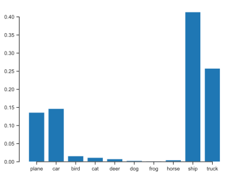
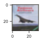
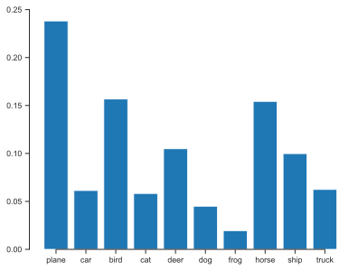
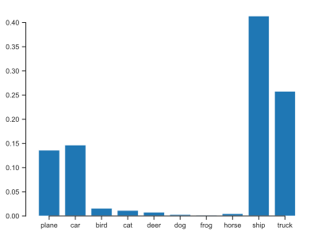
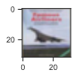
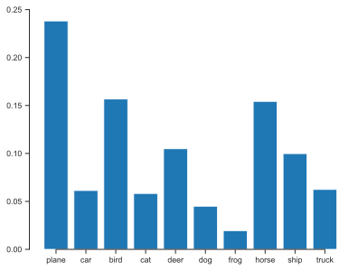

Show code cell source
import numpy as np
import matplotlib.pyplot as plt
%matplotlib inline
import matplotlib_inline
matplotlib_inline.backend_inline.set_matplotlib_formats('svg')
import seaborn as sns
sns.set_context("paper")
sns.set_style("ticks")
import urllib.request
import os
def download(
url : str,
local_filename : str = None
):
"""Download a file from a url.
Arguments
url -- The url we want to download.
local_filename -- The filemame to write on. If not
specified
"""
if local_filename is None:
local_filename = os.path.basename(url)
urllib.request.urlretrieve(url, local_filename)
Classification with Deep Neural Networks#
We implement image classification network in PyTorch. We add L2 regularization, convolutional layers, and hyper parameter tuning.
You may find these tutorials useful:
Deep Learning with PyTorch: A 60 minute blitz and in particular:
Training a Classifier - with which we use the same dataset in this hands-on activity.
The CIFAR10 dataset#
We will demonstrate multiclass classification using the CIFAR10 dateset.
The dataset consists of 60000 32x32 color images in 10 classes (plane, car, bird, cat, deer, dog, frog, horse, ship, and truck), with 6000 images per class.
The dataset can be downloaded directly from PyTorch using the torchvision module.
You can think of the original images as 32x32x3 arrays.
The first two dimensions correspond to the pixels.
The third dimension corresponds to the color (red, green, blue).
Of course, we must turn them into PyTorch tensors.
Also, it is more convenient to scale them to be between \([-1,1]\).
We will achieve this using a transformation.
Don’t worry about this now.
We will explain it as we go.
import torch
import torchvision
import torchvision.transforms as transforms
# This is the transformation that we will apply to each image
transform = transforms.Compose(
[transforms.ToTensor(), # This turns the picture to a Tensor
transforms.Normalize((0.5, 0.5, 0.5), (0.5, 0.5, 0.5))]) # This scales it to [-1, 1]
# Here is how you can download the training dataset
trainset = torchvision.datasets.CIFAR10(root='./data', train=True,
download=True, transform=transform)
# And here is how to download the test dataset:
testset = torchvision.datasets.CIFAR10(root='./data', train=False,
download=True, transform=transform)
# These are the class labels
classes = ('plane', 'car', 'bird', 'cat',
'deer', 'dog', 'frog', 'horse', 'ship', 'truck')
Downloading https://www.cs.toronto.edu/~kriz/cifar-10-python.tar.gz to ./data/cifar-10-python.tar.gz
100%|██████████| 170498071/170498071 [00:04<00:00, 34368893.07it/s]
Extracting ./data/cifar-10-python.tar.gz to ./data
Files already downloaded and verified
Now, all these data went into the folder “./data.” Here is what this folder contains:
!ls ./data/
cifar-10-batches-py cifar-10-python.tar.gz
The file cifar-10-python.tar.gz is a compressed file containing everything.
The contents were automatically extracted and put in the folder cifar-10-batches-py.
Let’s look inside this folder:
!ls -lht data/cifar-10-batches-py
total 363752
-rw-r--r-- 1 ibilion staff 88B Jun 4 2009 readme.html
-rw-r--r-- 1 ibilion staff 158B Mar 31 2009 batches.meta
-rw-r--r-- 1 ibilion staff 30M Mar 31 2009 data_batch_4
-rw-r--r-- 1 ibilion staff 30M Mar 31 2009 data_batch_1
-rw-r--r-- 1 ibilion staff 30M Mar 31 2009 data_batch_5
-rw-r--r-- 1 ibilion staff 30M Mar 31 2009 data_batch_2
-rw-r--r-- 1 ibilion staff 30M Mar 31 2009 data_batch_3
-rw-r--r-- 1 ibilion staff 30M Mar 31 2009 test_batch
You see several files.
The important ones are data_batch_1 to data_batch_5 and test_batch.
Each of these contains 10,000 images in a binary format.
The format is explained here.
We can read them as follows:
def unpickle(file):
import pickle
with open(file, 'rb') as fo:
dict = pickle.load(fo, encoding='bytes')
return dict
data = unpickle('data/cifar-10-batches-py/data_batch_1')
# data is a dictionary
# Here are the keys
print(data.keys())
dict_keys([b'batch_label', b'labels', b'data', b'filenames'])
# One key has to do with the pictures
# It gives you a numpy array:
print(data[b'data'].shape)
(10000, 3072)
# The first dimension correspond to differnt picture
# The second dimension is
32 * 32 * 3
3072
# So this is the first picture:
img = data[b'data'][0, :].reshape((32, 32, 3), order='F')
# Here is the Red channel:
print(img[:, :, 0])
[[ 59 16 25 ... 208 180 177]
[ 43 0 16 ... 201 173 168]
[ 50 18 49 ... 198 186 179]
...
[158 123 118 ... 160 184 216]
[152 119 120 ... 56 97 151]
[148 122 109 ... 53 83 123]]
The numbers go from 0 (no red) to 255 (full red). Here is how to visualize it:
fig, ax = plt.subplots(figsize=(1, 1))
ax.imshow(np.transpose(img, (1, 0, 2)));
This is clearly a frog. Let’s verify this:
classes[data[b'labels'][0]]
'frog'
This is nice. And we could proceed manually like this.
However, PyTorch offers some helpful functionality.
Let’s investigate the trainset that was returned by CIFAR10:
trainset
Dataset CIFAR10
Number of datapoints: 50000
Root location: ./data
Split: Train
StandardTransform
Transform: Compose(
ToTensor()
Normalize(mean=(0.5, 0.5, 0.5), std=(0.5, 0.5, 0.5))
)
# Here are the classes:
trainset.classes
['airplane',
'automobile',
'bird',
'cat',
'deer',
'dog',
'frog',
'horse',
'ship',
'truck']
# Here is the correspondence between classes and discrete labels
trainset.class_to_idx
{'airplane': 0,
'automobile': 1,
'bird': 2,
'cat': 3,
'deer': 4,
'dog': 5,
'frog': 6,
'horse': 7,
'ship': 8,
'truck': 9}
# Here are the images from all training batches
print(trainset.data.shape)
(50000, 32, 32, 3)
# Here are the labels
print(trainset.targets[:10])
[6, 9, 9, 4, 1, 1, 2, 7, 8, 3]
Alright.
Now, let’s use PyTorch functionality for looping over the training and the test datasets.
We need a DataLoader:
# One for the training data:
trainloader = torch.utils.data.DataLoader(trainset, batch_size=4,
shuffle=True, num_workers=0)
# One for the test data:
testloader = torch.utils.data.DataLoader(testset, batch_size=4,
shuffle=False, num_workers=0)
These objects work as follows:
# They help you loop over all the data in a random way (because we had shuffle=True)
for i, data in enumerate(trainloader, 0):
inputs, labels = data
# Here inputs are of size batch_size x (3 x 32 x 32)
# Since we had specified, the batch_size to be 4
# this essentially loads four images per iteration
if i % 1000 == 0:
print('Data point:', i, 'input size:', str(inputs.shape))
Data point: 0 input size: torch.Size([4, 3, 32, 32])
Data point: 1000 input size: torch.Size([4, 3, 32, 32])
Data point: 2000 input size: torch.Size([4, 3, 32, 32])
Data point: 3000 input size: torch.Size([4, 3, 32, 32])
Data point: 4000 input size: torch.Size([4, 3, 32, 32])
Data point: 5000 input size: torch.Size([4, 3, 32, 32])
Data point: 6000 input size: torch.Size([4, 3, 32, 32])
Data point: 7000 input size: torch.Size([4, 3, 32, 32])
Data point: 8000 input size: torch.Size([4, 3, 32, 32])
Data point: 9000 input size: torch.Size([4, 3, 32, 32])
Data point: 10000 input size: torch.Size([4, 3, 32, 32])
Data point: 11000 input size: torch.Size([4, 3, 32, 32])
Data point: 12000 input size: torch.Size([4, 3, 32, 32])
When you reach the end of the loop, you have visited all the images once.
Notice that PyTorch has reshaped the images to 3 x 32 x 32 3D arrays.
This is more convenient for the convolutional layers we will use later.
Also, PyTorch uses the transformations we gave it to scale the data to array elements to \([-1, 1]\).
Let me show you an example:
for i, data in enumerate(trainloader, 0):
inputs, labels = data
print(inputs[0])
break
tensor([[[ 0.6627, 0.7098, 0.4824, ..., -0.0510, -0.0902, -0.4039],
[ 0.6235, 0.7255, 0.6078, ..., -0.3412, -0.4431, -0.7333],
[ 0.3647, 0.4588, 0.4588, ..., -0.4745, -0.5608, -0.7255],
...,
[ 0.2627, -0.1137, -0.2471, ..., 0.2314, -0.1765, -0.3647],
[ 0.2863, -0.1373, -0.2863, ..., 0.2078, -0.2392, -0.3725],
[-0.0039, -0.5608, -0.5765, ..., -0.2941, -0.4980, -0.3882]],
[[ 0.8510, 0.8353, 0.7098, ..., 0.0667, -0.0118, -0.3569],
[ 0.7490, 0.6784, 0.6627, ..., -0.2549, -0.3882, -0.7176],
[ 0.6078, 0.5294, 0.4431, ..., -0.4196, -0.5451, -0.7490],
...,
[ 0.5529, 0.1059, -0.0667, ..., 0.2078, -0.1922, -0.3804],
[ 0.5294, 0.0431, -0.1529, ..., 0.1843, -0.2549, -0.3882],
[ 0.1922, -0.4275, -0.4980, ..., -0.3176, -0.5216, -0.4039]],
[[ 1.0000, 0.9216, 0.9059, ..., 0.3804, 0.2392, -0.1843],
[ 0.9216, 0.6784, 0.7569, ..., -0.0667, -0.2549, -0.6157],
[ 0.9059, 0.6314, 0.5216, ..., -0.2706, -0.4275, -0.6549],
...,
[ 0.9059, 0.4510, 0.2000, ..., 0.2627, -0.1608, -0.3725],
[ 0.9059, 0.3490, 0.0667, ..., 0.2392, -0.2235, -0.3804],
[ 0.4745, -0.2392, -0.3490, ..., -0.2627, -0.4902, -0.3961]]])
Training a classifier using dense DNNs#
Let’s train a classifier using a dense neural network. It could be better, but it is very easy to put together. We will start the network with 3 x 32 x 32 = 3072, followed by a few dense layers ending with ten outputs passed through softmax. However, for numerical stability reasons, we will not end with the softmax layer during training.
import torch.nn as nn
# The classifer - The dimensions of the layers have
# been picked to match those of the convolutional neural network
# that we are going to build later
# For now, just notice that we gradually take the 3072-dimensional input
# down to 10 dimensions (the number of classes we have)
# Also, notice that I do not add the softmax layer at this point
model_dense = nn.Sequential(nn.Linear(3072, 1176), nn.ReLU(),
nn.Linear(1176, 400), nn.ReLU(),
nn.Linear(400, 120), nn.ReLU(),
nn.Linear(120, 84), nn.ReLU(),
nn.Linear(84, 10))
# This is our loss function.
# Read this: https://pytorch.org/docs/stable/generated/torch.nn.CrossEntropyLoss.html
criterion = nn.CrossEntropyLoss()
# The reason we did not add the Softmax layer at the end is because
# the loss function above is doing it internally.
# It expects that you provide "contain raw, unnormalized scores for each class"
# Here is the optimizer
import torch.optim as optim
optimizer = optim.SGD(model_dense.parameters(), lr=0.001, momentum=0.9)
Let’s train the network. This is going to take a while (about 3 minutes on my desktop):
# How many times do you want to go over the entire dataset?
# Don't pick a very big number because you will overfit
num_epochs = 2
# Here is the main training algorithm
for epoch in range(num_epochs): # loop over the dataset multiple times
running_loss = 0.0
for i, data in enumerate(trainloader, 0):
# get the inputs; data is a list of [inputs, labels]
inputs, labels = data
# zero the parameter gradients
optimizer.zero_grad()
# forward + backward + optimize
outputs = model_dense(inputs.reshape(4, 3 * 32 * 32))
loss = criterion(outputs, labels)
loss.backward()
optimizer.step()
# print statistics
running_loss += loss.item()
if i % 1000 == 999: # print every 2000 mini-batches
print('[%d, %5d] loss: %.3f' %
(epoch + 1, i + 1, running_loss / 1000))
running_loss = 0.0
print('Finished Training')
[1, 1000] loss: 2.289
[1, 2000] loss: 2.098
[1, 3000] loss: 1.915
[1, 4000] loss: 1.814
[1, 5000] loss: 1.758
[1, 6000] loss: 1.718
[1, 7000] loss: 1.707
[1, 8000] loss: 1.671
[1, 9000] loss: 1.624
[1, 10000] loss: 1.615
[1, 11000] loss: 1.604
[1, 12000] loss: 1.559
[2, 1000] loss: 1.473
[2, 2000] loss: 1.481
[2, 3000] loss: 1.479
[2, 4000] loss: 1.488
[2, 5000] loss: 1.481
[2, 6000] loss: 1.470
[2, 7000] loss: 1.472
[2, 8000] loss: 1.433
[2, 9000] loss: 1.463
[2, 10000] loss: 1.450
[2, 11000] loss: 1.409
[2, 12000] loss: 1.404
Finished Training
Since training networks takes a while, it’s a good idea to save it:
torch.save(model_dense.state_dict(), 'hands-on-25-model-dense.pth')
Here it is as a file:
!ls -lht hands-on-25-model-dense.pth
-rw-r--r-- 1 ibilion staff 16M Oct 23 16:45 hands-on-25-model-dense.pth
Now let’s make some predictions:
# Get the first four images and their labels
dataiter = iter(testloader)
images, labels = next(dataiter)
print(labels)
tensor([3, 8, 8, 0])
# Make predictions with the net and pass them through
# softmax to turn them into probabilities
st = nn.Softmax(dim=1)
predictions = st(model_dense(images.reshape(4, 3072)))
def imshow(img, ax):
img = img / 2 + 0.5 # unnormalize
npimg = img.numpy()
ax.imshow(np.transpose(npimg, (1, 2, 0)))
# Plot the pictures and the predictions
for i in range(4):
fig, ax = plt.subplots(figsize=(1,1))
imshow(images[i], ax)
fig2, ax2 = plt.subplots()
ax2.bar(np.arange(10), predictions[i].detach().numpy())
ax2.set_xticks(np.arange(10))
ax2.set_xticklabels(classes)
sns.despine(trim=True)
 
Now, let’s do the same thing with a convolutional neural network.
We are not going to use nn.Sequential this time.
Instead, we will use nn.Module to manually create the network.
The documentation is here.
You need to inherit nn.Module, and implement __init__() and forward().
import torch.nn.functional as F
class Net(nn.Module):
def __init__(self):
super(Net, self).__init__()
# A convolutional layer:
# 3 = input channels (colors),
# 6 = output channels (features),
# 5 = kernel size
self.conv1 = nn.Conv2d(3, 6, 5)
# A 2 x 2 max pooling layer - we are going to use it two times
self.pool = nn.MaxPool2d(2, 2)
# Another convolutional layer
self.conv2 = nn.Conv2d(6, 16, 5)
# Some linear layers
self.fc1 = nn.Linear(16 * 5 * 5, 120)
self.fc2 = nn.Linear(120, 84)
self.fc3 = nn.Linear(84, 10)
def forward(self, x):
# This function implements your network output
# Convolutional layer, followed by relu, followed by max pooling
x = self.pool(F.relu(self.conv1(x)))
# Same thing
x = self.pool(F.relu(self.conv2(x)))
# Flatting the output of the convolutional layers
x = x.view(-1, 16 * 5 * 5)
# Go throught the first dense linear layer followed by relu
x = F.relu(self.fc1(x))
# Through the second dense layer
x = F.relu(self.fc2(x))
# Finish up with a linear transformation
x = self.fc3(x)
return x
model_cnn = Net()
Here is the optimizer:
optimizer = optim.SGD(model_cnn.parameters(), lr=0.001, momentum=0.9)
And here is the training loop. Notice that this network trains faster.
# How many times do you want to go over the entire dataset?
# Don't pick a very big number because you will overfit
num_epochs = 5
# Here is the main training algorithm
for epoch in range(num_epochs): # loop over the dataset multiple times
running_loss = 0.0
for i, data in enumerate(trainloader, 0):
# get the inputs; data is a list of [inputs, labels]
inputs, labels = data
# zero the parameter gradients
optimizer.zero_grad()
# forward + backward + optimize
outputs = model_cnn(inputs)
loss = criterion(outputs, labels)
loss.backward()
optimizer.step()
# print statistics
running_loss += loss.item()
if i % 1000 == 999: # print every 2000 mini-batches
print('[%d, %5d] loss: %.3f' %
(epoch + 1, i + 1, running_loss / 1000))
running_loss = 0.0
print('Finished Training')
[1, 1000] loss: 1.835
[1, 2000] loss: 1.763
[1, 3000] loss: 1.705
[1, 4000] loss: 1.674
[1, 5000] loss: 1.667
[1, 6000] loss: 1.645
[1, 7000] loss: 1.619
[1, 8000] loss: 1.609
[1, 9000] loss: 1.607
[1, 10000] loss: 1.542
[1, 11000] loss: 1.567
[1, 12000] loss: 1.564
[2, 1000] loss: 1.523
[2, 2000] loss: 1.519
[2, 3000] loss: 1.478
[2, 4000] loss: 1.515
[2, 5000] loss: 1.481
[2, 6000] loss: 1.506
[2, 7000] loss: 1.455
[2, 8000] loss: 1.493
[2, 9000] loss: 1.465
[2, 10000] loss: 1.448
[2, 11000] loss: 1.446
[2, 12000] loss: 1.450
[3, 1000] loss: 1.404
[3, 2000] loss: 1.380
[3, 3000] loss: 1.376
[3, 4000] loss: 1.405
[3, 5000] loss: 1.435
[3, 6000] loss: 1.381
[3, 7000] loss: 1.412
[3, 8000] loss: 1.416
[3, 9000] loss: 1.393
[3, 10000] loss: 1.406
[3, 11000] loss: 1.374
[3, 12000] loss: 1.349
[4, 1000] loss: 1.313
[4, 2000] loss: 1.317
[4, 3000] loss: 1.349
[4, 4000] loss: 1.353
[4, 5000] loss: 1.337
[4, 6000] loss: 1.312
[4, 7000] loss: 1.316
[4, 8000] loss: 1.327
[4, 9000] loss: 1.313
[4, 10000] loss: 1.333
[4, 11000] loss: 1.338
[4, 12000] loss: 1.333
[5, 1000] loss: 1.227
[5, 2000] loss: 1.266
[5, 3000] loss: 1.286
[5, 4000] loss: 1.267
[5, 5000] loss: 1.258
[5, 6000] loss: 1.282
[5, 7000] loss: 1.280
[5, 8000] loss: 1.271
[5, 9000] loss: 1.255
[5, 10000] loss: 1.283
[5, 11000] loss: 1.303
[5, 12000] loss: 1.260
Finished Training
Make some predictions:
# Make predictions with the net and pass them through
# softmax to turn them into probabilities
st = nn.Softmax(dim=1)
predictions = st(model_cnn(images))
for i in range(4):
fig, ax = plt.subplots(figsize=(1,1))
imshow(images[i], ax)
fig2, ax2 = plt.subplots()
ax2.bar(np.arange(10), predictions[i].detach().numpy())
ax2.set_xticks(np.arange(10))
ax2.set_xticklabels(classes)
sns.despine(trim=True)
It doesn’t work equally well for all classes.
Here is some code from the PyTorch tutorial to get the accuracy for each class:
class_correct = list(0. for i in range(10))
class_total = list(0. for i in range(10))
with torch.no_grad():
for data in testloader:
images, labels = data
outputs = model_cnn(images)
_, predicted = torch.max(outputs, 1)
c = (predicted == labels).squeeze()
for i in range(4):
label = labels[i]
class_correct[label] += c[i].item()
class_total[label] += 1
for i in range(10):
print('Accuracy of %5s : %2d %%' % (
classes[i], 100 * class_correct[i] / class_total[i]))
Accuracy of plane : 59 %
Accuracy of car : 65 %
Accuracy of bird : 46 %
Accuracy of cat : 25 %
Accuracy of deer : 42 %
Accuracy of dog : 48 %
Accuracy of frog : 66 %
Accuracy of horse : 62 %
Accuracy of ship : 59 %
Accuracy of truck : 62 %
This could be better. There are several things that we can do. First, we would run this for more epochs. At least 50 epochs are needed to train it properly. Second, we could add data augmentation. This can be done through a transformation; see this. Third, we have to make the network bigger. Here is a list of large networks trained on CIFAR10. It is possible to reach an accuracy of 95%.
A general advice: When you train neural networks think big. Make them big. Add a lot of data. Train more (but not too much).
Questions#
Set the number of epochs for the CNN-based model to 40. How much better accuracy do you get? Make sure you do this before bed and look at it in the morning. It takes a while to train.